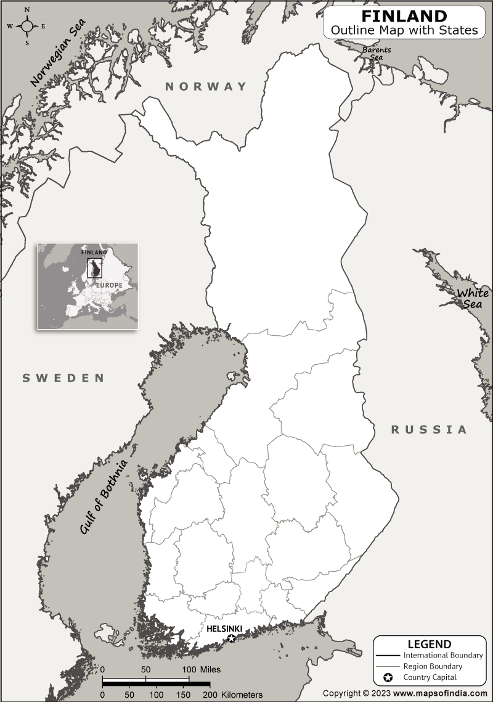

Tagasi
Soome Vabariik on riik Põhja-Euroopas Rootsi ja Venemaa vahel,üks Põhjamaadest.
Asustatud: 6. detsember 1917
Pealinn-Helsinki
Keel -- soome keel
Rahva arv -- 5 608 218
Linnad mida olen külastanud: Helsinki
Mida olen saavutanud selle reismisega:
Ajalugu õppinud:✅
Kohaliku toitu proovinud:✅
Kohaliku elamust proovinud:✅
